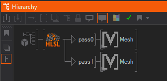

HLSL Shader
Table of Contents
 | HLSL Shader | A customizable HLSL shader implementation. |
The HLSL Shader node acts as a host for a user-designed shader program written in the High-Level Shading Level. By using customized shaders, a large portion of the rendering process can be modified to create a unique look and feel. This document discusses the function of the HLSL node and the interaction between shader code and the Ventuz rendering engine. For more information on the the user interface, see Shader Editor.
Shader Programming is an advanced topic that requires strong knowledge of both linear algebra as well as the inner workings of a graphics card. It is out of the scope of this documentation to teach a novice user how to develop or debug shaders. The following will thus only give a brief introduction to shading in general followed by a description of the Ventuz specific aspects of shader development.
HLSL Shader
For the purposes of Ventuz, a shader is a text that contains a shader description in the HLSL language. The following is an example of a minimalistic shader:
float4x4 Ms2Ss : WORLDVIEWPROJECTION; // matrix from Model Space to Clip Space
void VS( float3 MsPos : POSITION, out float4 SsPos : SV_Position )
{
SsPos = mul(float4(MsPos,1), Ms2Ss); // transform from model space (Ms9 to clip space (Ss)
}
void PS( out float4 color : SV_Target0 )
{
color = float4(1,0,0,1);
}
technique11 Tech1
{
pass pass0
{
vertexshader = compile vs_5_0 VS();
pixelshader = compile ps_5_0 PS();
}
}
A shader consists of two programs, the vertex and the pixel shader. The vertex shader is executed for each vertex that is rendered and must at least generate a transformed output position. The graphics card uses this output position to transform the primitive that is rendered into a number of fragments. For each fragment, the pixel shader is executed to calculate the final color of the fragment as it is turned into a pixel. In the example above, the vertex position is transformed using the world-view-projection matrix and each fragment is transformed into a solid red pixel regardless of any light or material nodes in the scene.
This is probably the simplest, non-trivial shader there is. More elaborate shaders may require the geometry to be drawn multiple times which is supported by defining multiple passes. Each pass is a combination of exactly one vertex shader and one pixel shader used to render the content associated with the shader. Finally, a shader may contain multiple techniques. A technique is a collection of passes and is usually used to implement the same effect in different variants. For example, one technique might be the high-end fire shader that only runs on the fastest of graphics cards, another technique is a trimmed down version that does not look as nice but runs on the weak embedded chips common in laptops.
Ventuz HLSL Shader
The shader node is a hierarchy node that can be used anywhere in the scene hierarchy. Similar to a Material Node, a shader will be applied to all geometries that are part of the subtree attached to the shader's output. By itself, a shader node only has a single property which is used to select the active Technique. The options available of course depend on the techniques defined in the shader code. All other properties are dynamically generated based on the global variables used in the shader source code.
Variables
A shader usually requires a number of values from the hosting application - in this case Ventuz - to operate properly. Even the simple shader in the example above requires the world-view-projection matrix to properly transform a vertex. There are three ways to assign a variable with proper values coming from Ventuz:
- Semantics: A semantic describes the meaning of a variable and is added by a colon followed by a string right after the variable declaration. If Ventuz understands the semantic, it will automatically fill the variable with the correct values before the shader is executed.
- Annotations: Annotations are a more standarized way of describing the meaning of a variable. They can be used to either describe how a proper user interface element for this variable should look like (for example a color picker) or bind them to a specific data source (for example the position of a light source).
- Neither: If neither a semantic or annotation is used, the variable will be translated into one or more properties that will be visible in the Property Editor when selecting the shader node.
If both semantics and annotations exist for the same variable, the annotations are used.
The shader parameters will be updated to the current values just before a geometry is rendered. So for example the world matrix will reflect the value active during geometry rendering, not at the time the shader node is traversed in the scene hierarchy.
Textures
A special case are textures. If a texture is bound to a texture property on the shader node, that texture will be activated when the shader node is processed. A texture bound to a shader's property will overwrite any texture on the respective texture stage that has been set by a Texture node before the shader in the scene hierarchy. Likewise, a texture node used after the shader will overwrite the texture assignment done by the shader to the same texture stage. If no texture is bound to the shader's texture property, the shader will use the most recent texture in the render order when processing a geometry.
A shader addresses a texture via a sampler object. A lot of shader source codes do not contain an explicit texture variable definition but rather rely on the host application to associate the appropriate texture with a specific sampler. In contrast, Ventuz requires a texture variable declaration to create a bindable texture property. The assignment of a texture to a sampler has to be done from within the shader source code during the sampling:
Texture2D tex : register(t0); // define texture SamplerState sam : register(s0); // define sampler // [...] // inside the pixel shader: color = tex.Sample(sam, UV); //sample tex with sam // [...]
Which texture variable is assigned to which stage depends on what the DirectX shader compiler thinks is best. Usually the first texture used in a render pass (e.g. the respective vertex shader and pixel shader) is assigned to stage 1, the second to stage two and so on. To ensure proper interoperability with the standard Texture nodes, a dedicated stage should be assigned to each sampler, especially when multiple textures are used in multiple passes. This is done by adding :register(sx) after the sample definition where x is a 0 for stage1 up to 7 for stage8.
Vertex Textures
Vertex shaders do not get textures from the normal texture stages. One of the special stages Vertex1 or Vertex2 needs to be selected in the Texture node.
To use the texture in the vertex shader, the sampler must be declared:
sampler Vertex1 : register(s0);
Register s0 will use Vertex1 and register s1 will use Vertex2.
A vertex texture must be sampled with the SampleLevel function. This is because mipmapping information cannot be computed automatically and must be specified manually. Usually you will want a mipmap LoD of 0.
// [...]
float2 uv = input.uv;
float lod = 0;
float4 tex = tex.SampleLevel(Vertex1,uv,lod);
// [...]
Filtering works the same as with pixel shader textures.
Passes
A shader node has a number of outputs that corresponds to the maximum of the number of passes over all techniques in the shader. Each output is labeled with the name of the pass as used in the shader source code for easy identification. If the number of passes changes due to modifications of the shader source code, the number of outputs is adapted as well. Note however that an output will not be removed if there are nodes attached to it.

If multiple passes are required to render the same geometry, the respective nodes should be linked to both outputs (using CTRL + SHIFT while dragging, see Hierarchy Editor). This avoids creating two copies of all the nodes in the subtree, but there is still a memory overhead compared to using the content only on one output.
Reference Information
Supported Semantics
One of the biggest drawback of shader semantics is the fact that they are not standardized. It is up to the application to define a string that is used to describe a certain semantic and many applications use incompatible definitions. At the time of writing, Ventuz only supports the following semantics:
| Semantic | Type | Description |
|---|---|---|
| WORLD | float4x4 | The object-to-world matrix at the geometry currently rendered. Usually the result of a number of Axis nodes. |
| WORLDINVERSE | float4x4 | Inverse of the object-to-world matrix. |
| VIEW | float4x4 | The world-to-view matrix at the geometry currently rendered. Usually the result of a Camera node. |
| VIEWINVERSE | float4x4 | Inverse of the world-to-view matrix. |
| PROJECTION | float4x4 | The view-to-clip space matrix at the geometry currently rendered. Usually the result of a Camera node. |
| PROJECTIONINVERSE | float4x4 | Inverse of the view-to-clip space matrix. |
| WORLDVIEWPROJECTION | float4x4 | Combined matrix that contains the complete transformation from object to clip space. This is usually used to compute the output position of a vertex. |
| WORLDVIEWPROJECTIONINVERSE | float4x4 | Inverse of the world-view-projection matrix. |
| WORLDVIEW | float4x4 | Combined matrix that contains the object-view transformation. |
| WORLDVIEWINVERSE | float4x4 | Inverse of the world-view matrix. |
| VIEWPROJECTION | float4x4 | Combined matrix that contains the transformation from world to clip space. |
| VIEWPROJECTIONINVERSE | float4x4 | Inverse of the view-projection matrix. |
Example:
float4x4 Ms2Ss : WORLDVIEWPROJECTION;
Supported Annotations
Annotations are an effort by Microsoft to address the disadvantages of using semantics. There are two different categories of annotations: User interface and data binding annotations. All annotations are specified by variable declarations inside less and greater than characters right after the original variable.
Data bindings work similar to semantics. They define the data source for a variable by declaring the SasBindAddress variable.
float4x4 View
<
string SasBindAddress = "Sas.Camera.WorldToView";
>;
| Semantic | Type | Description |
|---|---|---|
| Sas.Skeleton.MeshToJointToWorld[0] | float4x4 | Object-to-world matrix. |
| Sas.Camera.WorldToView | float4x4 | World-to-view matrix. |
| Sas.Camera.Projection | float4x4 | View-to-clip space matrix. |
| Sas.Light[0].Direction | float3 | Direction vector of the first light source. Indices 0-7 are supported. |
| Ventuz.Lights.Ambient | float4 | Ambient color of the most recently set light source with respect to the rendering order of the scene hierarchy. |
| Ventuz.Lights.Diffuse | float4 | Diffuse color of the most recently set light source with respect to the rendering order of the scene hierarchy. |
| Ventuz.Lights.Direction | float3 | Direction vector of the most recently set light source with respect to the rendering order of the scene hierarchy. |
| Ventuz.Lights.Position | float3 | Position of the most recently set light source with respect to the rendering order of the scene hierarchy. |
| Ventuz.Lights.Specular | float4 | Specular color of the most recently set light source with respect to the rendering order of the scene hierarchy. |
| Ventuz.Material.Alpha | float | Alpha value at the geometry currently rendered. Multiple Alpha nodes or Material nodes may have contributed to this value based on their AlphaRelation properties. |
| Ventuz.Material.Ambient | float4 | Ambient material color active at the time the geometry is rendered, usually the result of a parent Material node. |
| Ventuz.Material.Color | float4 | Color active at the time the geometry is rendered. In case the geometry is influenced by a Material node, this will be the diffuse color of that node. In case the geometry is influenced by a Color node, this will be the color of that node. Note that the alpha value may be the accumulated alpha of multiple nodes based on the AlphaRelation property of the material node. |
| Ventuz.Material.Base | float4 | Base Color. |
| Ventuz.Material.Diffuse | float4 | Diffuse material color active at the time the geometry is rendered, usually the result of a parent Material node. Note that the alpha value may be the accumulated alpha of multiple nodes based on the AlphaRelation property of the material node. |
| Ventuz.Material.Emissive | float4 | Emissive material color active at the time the geometry is rendered, usually the result of a parent Material node. |
| Ventuz.Material.Sharpness | float | Specular material exponent active at the time the geometry is rendered, usually the result of a parent Material node. |
| Ventuz.Material.Specular | float4 | Specular material color active at the time the geometry is rendered, usually the result of a parent Material node. |
| Ventuz.RenderTarget.Size | float2 | Dimension in pixel of the Offscreen Layer active during rendering of the geometry. |
| Ventuz.Texture.Active | bool | True if at least one texture is set to any of the texture stages, usually the result of a parent Texture node. |
| Ventuz.Texture.Mapping | float4x4 | Texture mapping matrix active at the time the geometry is rendered, usually the result of a inside a Material node. A shader that wants to respect texture mapping should multiply the input texture coordinates by this matrix to apply the mapping transformation. |
| Ventuz.Viewport.Size | float2 | Dimension in pixel of the [NodeLayer3D 3D Layer] active at the time the geometry is rendered. |
| Ventuz.DirectionalLight[*] | VentuzDirectionalLight[8] | All directional lights, see Light Source Information |
| Ventuz.PointLight[*] | VentuzPointLight[8] | All point-lights, see Light Source Information |
| Ventuz.SpotLight[*] | VentuzSpotLight[8] | All spot-lights, see Light Source Information |
| Ventuz.Light[*] | VentuzLight[8] | All lights, see Light Source Information |
| Ventuz.NumDirectionalLights | int | Number of directional lights |
| Ventuz.NumPointLights | int | Number of point-lights |
| Ventuz.NumSpotLights | int | Number of spot-lights |
| Ventuz.NumLights | int | Number of lights, independent of type |
| Ventuz.Textures[*].Size | float4[8] | Size of the texture image in pixels, see Texture Information |
| Ventuz.Textures[*].Mapping | float4x4[8] | Mapping matrices for all textures, see Texture Information |
| Ventuz.Textures[*].Info | uint4[8] | Information about texture shading and UV mapping, see Texture Information |
| Ventuz.NumTextures | int | Number of textures. Exactly: Index of the last used texture stage plus one. |
Each binding may only be used for exactly one variable.
UI Annotations do not cause parameters to be filled with values but rather influence the way a shader parameter appears in the Property Editor. For example below, the shader variable DiffColor will appear as a color picker labeled Diffuse. If the annotations would not exist, the default behavior would create four separate float properties, one for each components in the vector. The assignment of a default value can be used both with or without annotations. If it exists, it will be used as the value a property is reset when the reset button next to a property is pressed in the Property Editor.
float4 DiffColor
<
string SasUiControl = "ColorPicker";
string SasUiLabel = "Diffuse";
> = { 1.0f, 0.022f, 0.0f, 1.0f };
| Annotation | Type | Description |
|---|---|---|
| SasUiControl | string | Supported values are ColorPicker and Direction. |
| SasUiLabel | string | Name of the property as it will appear in the Property Editor, must be unique with respect to the other properties generated. If the same name is used for different properties, the automatic property generation algorithm will most likely fail or produce incorrect results. |
| SasUiMin | int/float | Minimum value for a float or int variable, not supported for vector types. |
| SasUiMax | int/float | Maximum value for a float or int variable, not supported for vector types. |
| SasUiSteps | int/float | Increments by which a property can be increased/decreased. Can for example be used to only allow odd numbers. |
| SasUiVisible | bool | If set to false, no property will be generated for this variable. |
| VentuzFavored | bool | By default, all parameters will produce a favored property. Use this annotation to specify whether a property should be favored or not. |
State Changes
HLSL allows adding state change information to a pass (see MSDN: Effect states. While one could also use the respective Ventuz nodes, it is a convenient way to influence the rendering behavior.
DepthStencilState NoZTest {
DepthEnable = FALSE;
};
technique11 Tech1
{
pass pass0
{
vertexshader = compile vs_5_0 VS();
pixelshader = compile ps_5_0 PS();
SetDepthStencilState( NoZTest, 0 );
}
}
The state changes are applied when rendering of the respective pass starts, so at the time of the shader node in the rendering order. Any relevant node (for example Z-Testing for DepthEnable) before the shader is overwritten and any node after the shader will overwrite the shader's state change.
Light Source Information
Information about all light source can be retrieved in the shader by using the Ventuz.DirectionalLight[*], Ventuz.PointLight[*], Ventuz.SpotLight[*] and Ventuz.Light[*] annotations. First you have to declare the following structures:
struct VentuzDirectionalLight
{
float3 DiffuseColor;
float3 SpecularColor;
float3 AmbientColor;
float3 Direction;
};
struct VentuzPointLight
{
float3 DiffuseColor;
float3 SpecularColor;
float3 AmbientColor;
float3 Position;
float3 Attenuation;
float Range;
};
struct VentuzSpotLight
{
float3 DiffuseColor;
float3 SpecularColor;
float3 AmbientColor;
float3 Position;
float3 Direction;
float3 Attenuation;
float4 RangeFallofInnerOuter;
};
struct VentuzLight
{
int Type;
float3 DiffuseColor;
float3 SpecularColor;
float3 AmbientColor;
float3 Position;
float3 Direction;
float3 Attenuation;
float4 RangeFallofInnerOuter;
};
Once the structures have been defined, the actual binding is done as follows:
VentuzDirectionalLight DirLights[8] < string SasBindAddress = "Ventuz.DirectionalLight[*]"; >; VentuzPointLight PointLights[8] < string SasBindAddress = "Ventuz.PointLight[*]"; >; VentuzSpotLight SpotLights[8] < string SasBindAddress = "Ventuz.SpotLight[*]"; >; VentuzLight SpotLights[8] < string SasBindAddress = "Ventuz.Light[*]"; >; int DirectionalLightCount < string SasBindAddress = "Ventuz.NumDirectionalLights"; >; int PointLightCount < string SasBindAddress = "Ventuz.NumPointLights"; >; int SpotLightCount < string SasBindAddress = "Ventuz.NumSpotLights"; >; int LightCount < string SasBindAddress = "Ventuz.NumLights"; >;
The Ventuz.NumXXXLights] bindings indicate how many lights are set in the corresponding Ventuz.XXXLight[*] binding. For example, if there are two point lights and one directional light in the scene, PointLightCount will be two, DirectionalLightCount will be one, SpotLightCount will be zero. and LightCount will be three.
Reducing the size of the arrays will work just fine, the shader will use less constant registers, be shorter and faster, compile faster, but obviously will handle less lights.
When the shader is supposed to work only with certain types of lights, bind Ventuz.DirectionalLight[*] Ventuz.SpotLight[*] or Ventuz.PiontLight[*]. When the shader is supposed to handle all lights, binding to Ventuz.Light[*] will result in a faster shader that uses much less constant registers.
The field RangeFallofInnerOuter holds for information:
- RangeFallofInnerOuter.x is the range
- RangeFallofInnerOuter.y is the falloff
- RangeFallofInnerOuter.z is the inner cone, in the form of cos(inner/2)
- RangeFallofInnerOuter.w is the outer cone, in the form of cos(outer/2)
These four values are packed into a single vector to save constant registers in the shader.
Shaders emulating fixed function lighting can become quite inefficient. Be sure to exclude all unnecessary features. The most efficient version is iterating over all Ventuz.Light[*] with an unrolled for loop, in this case the compiler will use static branching.
The light Type is:
- 1: Point light
- 2: Spot light
- 3: Directional light
Texture Information
The following bindings give you information about all textures:
float4 TexSize[8]
<
string SasBindAddress = "Ventuz.Textures[*].Size";
>;
float4x4 TexMap[8]
<
string SasBindAddress = "Ventuz.Textures[*].Mapping";
>;
uint4 TexInfo[8]
<
string SasBindAddress = "Ventuz.Textures[*].Info";
>;
int TexCount
<
string SasBindAddress = "Ventuz.NumTextures";
>;
Ventuz.NumTextures indicate the number of used textures, or more precisely the index of the last used texture plus one.
If information for less than 8 textures is required, the arrays can be reduced in size to save constant registers.
Ventuz.Textures[*].Size tells the size of the texture in pixels. A float4 must be used although only the x and y components are used.
Ventuz.Textures[*].Mapping hold the texture transform matrix.
Ventuz.Textures[*].Info contains various information about selected texture options. Interpreting this in the pixel shader will always be inefficient, but it allows to create more flexible shaders.
- info.x identifies the color calculation (shading) of this texture stage
- info.y identifies the alpha channel calculation (shading) of this texture stage
- info.z selects the UV mapping method
- info.w informs about the texture sampling.
Passing all texture stage shading information to the shader is impractical. Only a few selected options are given in info.x and info.y:
- 0: value of this stage is not used
- 1: value of this stage overwrites
- 2: modulate (multiply)
- 3: add
- 4: add smooth ((a+b)-(a*b))
- 5: modulate with texture alpha
- 6: alpha blend with texture alpha
The UV mapping options in info.z are
- 0: vertex UV's
- 1: camera space normal
- 2: camera space position
- 3: camera space reflection vector
- 4: sphere mapping
The sampling options in info.z are
- 0: texture is unused
- 1: 2d texture
- 2: 2d texture with projection
- 3: cube texture
Your shader should sample each texture only once. It should sample the same texture once in an if block and again in an else block since the shader compiler will usually create code that samples the texture twice and then selects one of the results using arithmetic instructions, and that is unnecessary slow.
Adapting External Shaders
For a shader to work properly, a certain amount of functionality is required in the hosting application. Since the implementation of that functionality varies from application to application, it is in general not possible to simply copy-and-paste the shader source code from another application into Ventuz and having it produce the same results without modifications. The following is a list of points based on the experiences on porting shaders to Ventuz:
- Ventuz uses DirectX 11 and thus supports pixel shader model and vertex shader model 5.0. Older shader models will not compile without some modifications.
- Multiplication order: The proper multiplication order of a vector and matrix is vecresult = mul(vec, matrix) as the matrices are passed to the shader in a column-major layout. ATI Render Monkey for example uses a row-major layout and therefore uses an inverted multiplication order in its shader examples.
- Left-handed vs right-handed coordinate system: Ventuz by default uses a left-handed coordinate system (x to the right, y to the top, z point towards the screen) where many modeling/CAD applications use a right-handed coordinate system (z points away from the screen). This may require that vector/matrix operations have to be adapted.
- If something doesn't work, maybe the shader source is buggy. Even the official parallax occlusion shader from the DirectX SDK has a bug in it.
- In one case, the binormal and tangent had to be switched in the shader source code to produce correct results in Ventuz.
- Ventuz generates properties for all global variables that are not bound to a data source via semantic or annotation. For constants that are only required in the shader and are never supposed to change, use the const static keywords.
- It is possible to pass float arrays to a shader, but the size of the array has to be set to a fixed size in the shader code. There is no way to handle arrays of dynamic size.
- Calling normalize on a float4 divides all components by the length of the complete vector. For example, normalize( mul(Pos, world_view) ) will produce an incorrect direction vector as the homogenous component w is not ignored. Either set it to zero before normalizing or clamp the float4 to a float3.
- The statement if ( booleanvariable == true ) for some reason always evaluates to true. Instead, use if ( booleanvariable ).
- Variable may have incorrect names. In one example, a variable called worldtoview actually contained the view-to-world transformation. If possible, check the application source code with what values a shader parameters is filled.
- Shaders often do some pre-computation in the hosting application, for example to compute the camera position once for a geometry. If no appropriate semantic/annotation exists to get that value, one has to compute it in the vertex/pixel shader manually.
- Shader Editor Docking Window
- wikipedia: HLSL
- MSDN: Programming Guide for HLSL
- MSDN: Standard Annotations and Semantics
- The GPU Gems series of books as well as the Shader X series of books